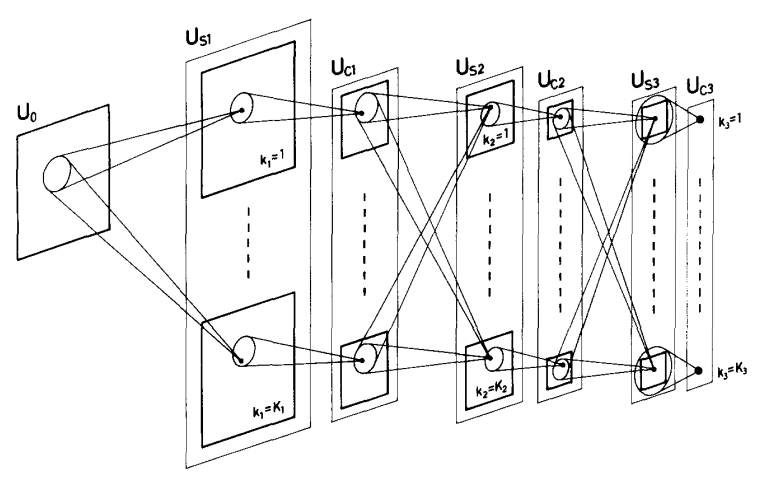
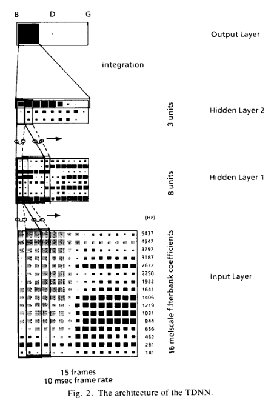
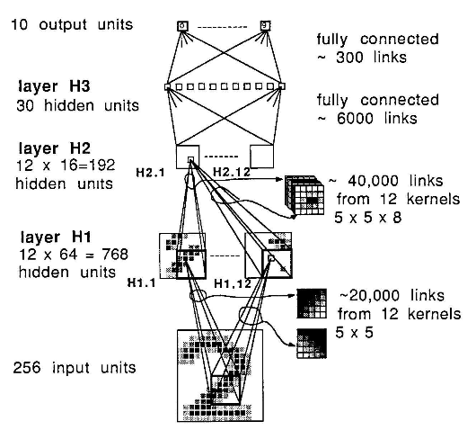
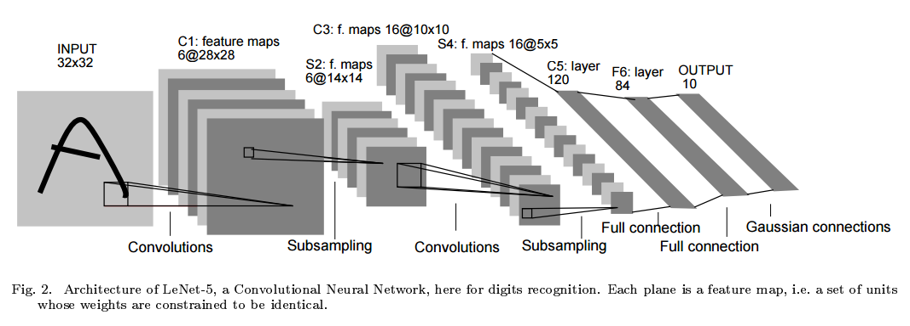
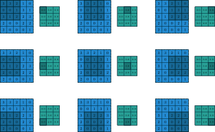
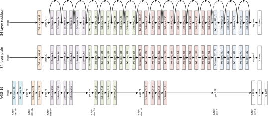
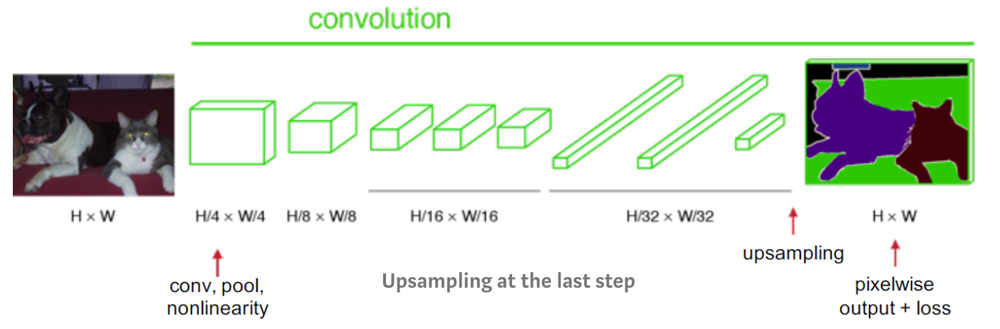
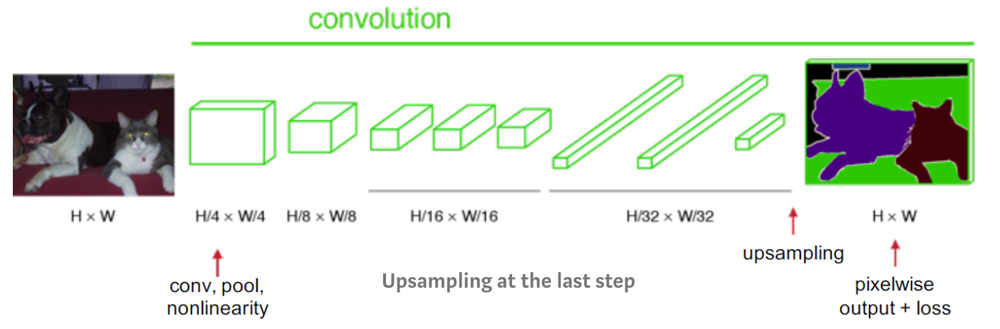
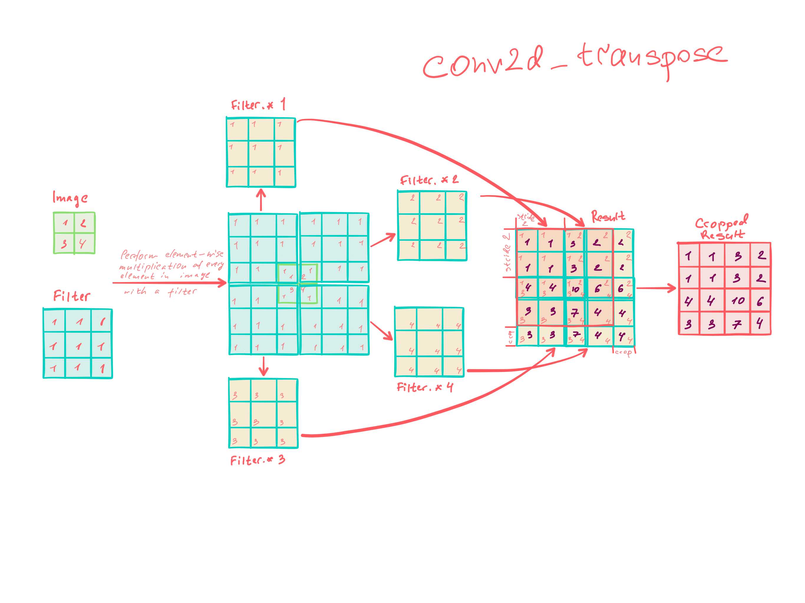

Supervised and Self-supervised Deep Learning for Structural and Functional Neuroimaging
Sergey Plis
OHBM 2024: Deep learning in Neuroimaging
Outline for the lecture
- A Short and Based History of CNNs
- Building Blocks of CNNs
- Predictive Model
- Semantic Segmentation and More Blocks
- U-Net - a Powerful Segmentation Model
- MeshNet - Still Powerful but tiny
- Self-Supervised, aka Synthetic Data, Training
STRUCTURAL DATA
Convolutional Neural Networks
work great for structure
a very brief and biased
history
David Hubel
Torsten Wiesel
Cat's brain 1962


Kunihiko Fukushima
Neurocognitron 1979


Alexander Weibel
Time Delay Neural Network 1989


Yann LeCun
CNN 1989

Yann LeCun
CNN 1998

Building blocks I
to build CNNs we need:
Convolutions
Max Pooling
Skip Connections
Convolving a kernel with an image
Convolution: frame by frame

Pooling: maxpooling

Pooling: maxpooling
What happens in 3D?
skip connections
Highway networks (May 2015 on arxiv)
-
$$
\vec{y} = H(\vec{x}, \bm{W}_H)
$$
-
$$
\vec{y} = H(\vec{x}, \bm{W}_H) \odot T(\vec{x}, \bm{W}_T) + \vec{x} \odot C(\vec{x}, \bm{W}_C)
$$
-
$$
\vec{y} = H(\vec{x}, \bm{W}_H) \odot T(\vec{x}, \bm{W}_T) + \vec{x} \odot (1 - T(\vec{x}, \bm{W}_T))
$$
-
$$
\vec{y} =
\left\{
\begin{array}{ll}
\vec{x} & \mbox{if }\;\;T(\vec{x}, \bm{W}_T)=0,\\
H(\vec{x}, \bm{W}_H) & \mbox{if }\;\;T(\vec{x}, \bm{W}_T)=1
\end{array}
\right.
$$
Residual Networks (block)
Residual Networks (full)
Residual Networks (performance)

Error surface effect of skip connection

Dense Networks (architecture)

Dense Networks (effect)

Volumetric Predictive Model
Alzheimer's Disease prediction
Improves on Big Data
Brain Segmentation

Missing pieces:
One-Convolution
Fully convolutional networks
Up-convolution
One-convolution

Replacing feed forward with convolutional
 


Upconvolution
Fully Convolutional Model (2014)

Autoencoder: an encoder/decoder model
Segmentation Model
Let's put together
Upconvolution
Fully convolutional networks
Encoder-decoder architecture
Skip Connections
Olaf Ronneberger
One U-shaped Network
U-Net
U-Net took over the world
But there is a problem
parameters and memory usageConsider a small U-net


Skip-connections need memory
We could train on subcubes
Full volume training and inference gives better accuracy
but requires 80Gb GPU for training and more than 10Gb for inference
Mechanisms for Sharing Neuroimaging AI Models
- Native Installation (conda, CUDA, and all that Jazz)
- Containers (see nobrainer)
- Running Models in the Cloud
- Edge-Based Deployment
A sparse solution
enter Dilated convolution

U-Net building blocks
- Upconvolution
- Fully convolutional networks
- Encoder-decoder architecture
- Skip Connections
- Dilated Convolutions

Alex Fedorov
MeshNet


- 72516 vs 23523355 U-Net parameters
- but that's for 21 channel MeshNet
- 5 channel MeshNet is about 4x smaller
Now we can deliver models to users of any skill
Self-Supervised
aka Synthetic Data training
Do we need all data in the world to train robust models?
data generation
SynthSeg

SynthStrip
SynthSR
The Catch: Training takes a week
GPU utilizationDecouple training and generation
really Decouple training and generation

Demo the robust model
today We have learned
- How volumetric CNNs are built for working with structural MRI
- How U-Net, the most popular semantic segmentation model, works
- How to simplify end-users lives with MeshNet via zero-footprint deep learning
- How to efficiently utilize self-supervised learning to train robust segmentation models
- How to use segmentation models anywhere there is a browser (shameless plug) brainchop.org